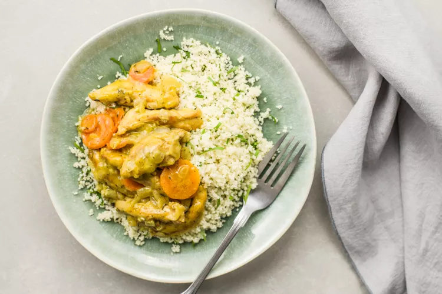

Baked Honey Mustard Chicken

Description
This quick and easy recipe for honey mustard chicken thighs is ready in less than
30 minutes, making it ideal for a delicious weeknight meal. The chicken is cut
into strips and simmered in a rich honey mustard sauce along with carrots,
onions, and garlic to make a fragrant and flavorful dinner.
Serve this wonderful recipe with hot cooked couscous, cooked brown rice or pasta
to soak up the tangy sauce, and a green salad tossed with mushrooms and cherry
tomatoes for a nice dinner on a busy weeknight.
Ingredients
- 1 tablespoon butter
- 1 tablespoon olive oil
- 1 onion (chopped)
- 1 (1 1/2-pound) package chicken thighs (boneless, skinless, and cut into strips)
- 4 carrots (sliced or 1 package baby carrots)
- 2 cloves garlic (minced)
- 3 tablespoons honey
- 2 tablespoons mustard
- 1/3 cup chicken broth
- 1/2 teaspoon thyme
- 1/2 teaspoon salt
- 1/8 teaspoon pepper
Steps
- Gather the ingredients.
- Melt the butter and olive oil in a heavy skillet over medium heat.
- Add the onion; cook and stir for 4 minutes.
- Then add the chicken and carrots and cook for 4 to 5 minutes, until the
chicken is browned on the bottom.
- Meanwhile, in a small bowl, combine the garlic, honey, mustard, chicken
broth, thyme, salt, and pepper and mix well.
- Turn the chicken in the skillet using tongs, and add the honey mixture.
- Cover the pan and bring to a simmer.
- Reduce heat to low and cook the chicken, stirring occasionally, for 7 to 9
minutes until the chicken is thoroughly cooked to 165 F and the vegetables
are tender.
- Serve immediately over hot cooked rice, pasta, or couscous.
- Enjoy!